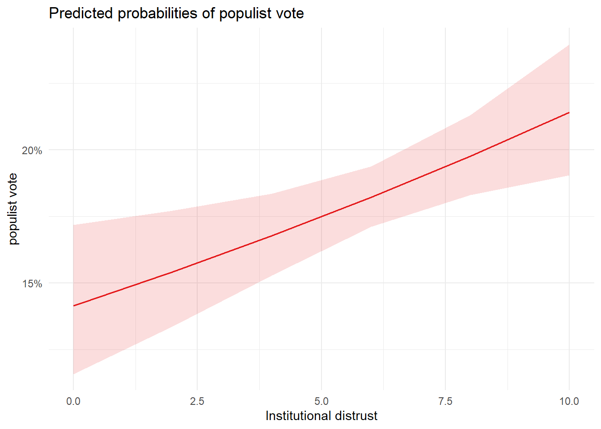
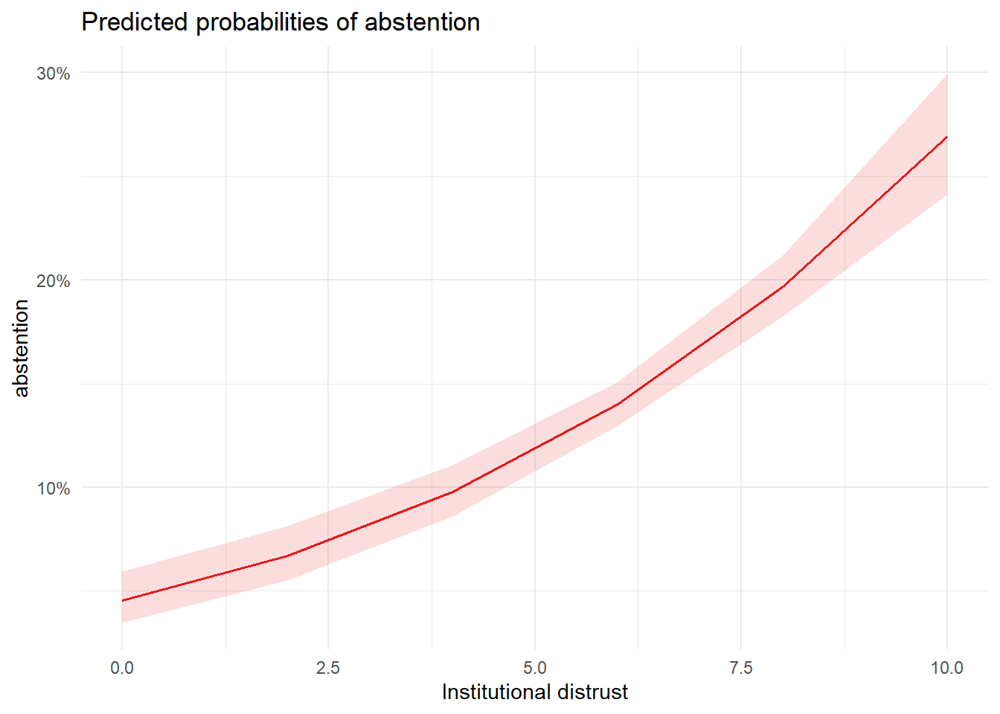

| Populist vote model | Abstension model | |
|---|---|---|
| + p < 0.1, * p < 0.05, ** p < 0.01, *** p < 0.001 | ||
| (Intercept) | -1.803*** | -3.040*** |
| (0.117) | (0.143) | |
| Institutional_distrust | 0.050** | 0.204*** |
| (0.017) | (0.020) | |
| Num.Obs. | 4498 | 4498 |
| F | 8.260 | 104.599 |
| RMSE | 0.39 | 0.35 |
Populist parties: still a home for the politically distrustful, or a faded and institutionalized phenomenon?
Research question and hypothesis
Italian populist parties rise and fall
In the 2018 Italian political elections 5 star movement and League for Salvini premier were the biggest winners obtaining respectively 32% and 17% of the votes; these two can be considered the main populist Italian parties . The dissatisfaction toward political parties and their system was one of the main driver for their rise (Chiaramonte et al., 2018) .
4 years later these 2 parties fell: 5 star movement obtained about 15,43% but the worst fall was the League one, collapsing to 8.8%.
Younger generations and democracy
Lots of studies in recent years showed a growing disaffection and distrust of younger generations toward democracy and its institutions and parties (e.g. Kwak et al., 2020). This phenomenon frequently lead to two different attitudes that influence their behavior when they are called to the polls: democratic apathy and democratic antipathy; the former leading to abstention, the latter to vote for anti-system/populist parties (Foa & Mounk, 2019).
Research questions and hypothesis
The purpose of the present study is to check the grade with which these two parties are still able to answer the distrustful and protesting political supply and whether it changes for age cohorts in the 2022 Italian general elections.
The main research question will be the following:
- How much the distrust toward political and party system translates in voting for populist parties? How does It changes for different cohorts?
It will be articulated in 2 main hypothesis:
H1: Higher level of distrust toward Parliament and political parties will tend to significantly increase the share of votes for populist parties.
H2: The positive effect of institutional distrust on populist voting will be weaker among younger cohorts (18-34), who are more likely to convert distrust into abstention rather than partisan choice.
Data and variable operationalization
Data source
To operationalize distrust and its relation with voting behavior the ITANES post-electoral data from 2022 elections (Vezzoni et al., 2023) has been employed; it provides individual level observations for 4696 individuals.
Selected variables and operationalization
Institutional distrust: To operationalize this dimension an index was built. To do so factor analysis and principal component analysis were performed on 5 selected items. The analyses highlighted 2 main dimensions: institutional distrust and stealth democracy, both theoretically correlated with populism. Nevertheless only the first dimension was employed for the present study as it was better defined and, theoretically, a predictor for both populism and abstention. More on the indexes construction in the appendix A.
Institutional distrust is composed by three items: trust toward parliament, government and parties. This three items had range 1-4 were 1 meant a lot of trust. I then constructed a weighted index and rescaled it 0-10 for interpretability.
Populist vote: votes for 5SM and League were coded as populist and other as non populist. The selection of this two come from CHES & POPPA (Rovny et al., 2025; Zaslove et al., 2024) scores, two of the main expert surveys about political parties1 .
Abstention: for abstention the voted/non voted variable from ITANES was employed
Age class: the survey presented a 6 class age classification which were recoded to 5 for 2 reasons:
- The main hypothesis is about younger generations which include also 25-34. The study main model will be a logistic model, which require a reference category; having them both as reference category will help to compare them directly with other cohorts;
- 19-24 and 24-35 are the two less numerous categories, specially the lower one which presented less than a half observation respect to the others. Merging them was useful to have stronger predictive power.
Macro Region: for electoral behavior geographical positioning is always a strong predictor in Italy, observations were divided them in the 3 classical macro regions: north, south and red zone (Toscana, Emilia-Romagna, Marche, Umbria).
More information about employed items and their item-code are available in appendix B.
Model choice and statistical justification
Main model
To test H1 a logistic regression model has been employed for both populist vote and abstention. This kind of regression is appropriate as it models the outcome as a probability within the [0,1] range and both the dependent variables are binary. Main independent variable was institutional distrust.
The initial univariate analysis has been performed and it led to a small effect, suggesting potential misspecification of the model, particularly the violation of the linearity assumption in the logit.
Since the logistic regression failed to produce strong significative results a Generalized addittive model (GAM) was employed as a diagnostic tool to check if the fitting problem was due to data distribution; it was ideal because it doesn’t assume linearity and adapt to the shape of the data and reveal potential non linear patterns. This showed a non-monotonic relationship between distrust and populist voting with a collapse in populist voting for high levels of distrust, and, on the contrary, abstention displays a consistently positive relationship.
Based on this evidence a restricted specification, labelled Critical Distrust Threshold (CDT), was introduced. It restricted the sample respondents below the threshold of 8. A better fitting on this data would confirm that distrust works as a positive predictor till medium-high levels of distrust.
Interaction and Additive model
To test H2 age class was added and incorporated in both additive and interaction models. The aim of the first one was to study the effect of age class isolated; the second to check whether distrust interacted with age class, trying to have a better comprehension of how distrust translates to electoral behavior for each age class. The selected reference category has been 18-34, as it was the main focus of the study: this choice permitted to compare it to all the other classes.
Lastly a control for Macro Region was included, to account for persistent territorial differences in voting behavior.
Results
Institutional distrust on populist vote and abstention
The first univariate model aimed to capture the effect of distrust on populism and abstention. Both resulted significant but the coefficient for abstention was substantially larger. The coefficients for logistic regression are presented in log-odds, a 1 point increase in distrust would increase the log-odds of voting populist of 0.05, though this is a scale that lacks intuitive interpretability. A common approximation is to use the “divide by 4 rule” dividing the parameter by 4 to have the slope of the curve in its steepest part around 0.5 probability, however, since the predicted probabilities lies below that threshold the marginal effect would be overestimated.
To interpet these coefficients two operations were performed: (1) exponentiating the logistic coefficient to obtain an odds ratio; (2) computing the derivative at the average value of institutional distrust in ITANES data to evaluate the predictive difference.
- Populist vote: the exponentiation lead to an odds ratio of 1.05, this indicate that a unit increase in institutional distrust increases the odds of voting populist of 5.1%. Moreover at the mean distrust level (6.2) the probability of voting populist is 18.3% with a slope of 0.008. From the graphical representation below it can be appreciated the approximately constant marginal effect of distrust on populist vote.

- Abstention: as can be appreciated immediately from the graph comparison the effect of distrust on abstention is way stronger, starting from below 5% for distrust = 0, but with increasing marginal effects. The slope at the mean distrust level is 0.026, meaning that a 1 point increment at 6.2 would increment the probability of abstaining 2.6%
Data were 'prettified'. Consider using `terms="Institutional_distrust
[all]"` to get smooth plots.
Interpretation and substantive insights
Limitations and reflection
Appendix A
Appendix B
Bibliography
Chiaramonte, A., Emanuele, V., Maggini, N., & Paparo, A. (2018). Populist Success in a Hung Parliament: The 2018 General Election in Italy. South European Society and Politics, 23(4), 479–501. https://doi.org/10.1080/13608746.2018.1506513
Foa, R. S., & Mounk, Y. (2019). Youth and the populist wave. Philosophy & Social Criticism, 45(9-10), 1013–1024. https://doi.org/10.1177/0191453719872314
Kwak, J., Tomescu-Dubrow, I., Slomczynski, K. M., & Dubrow, J. K. (2020). Youth, Institutional Trust, and Democratic Backsliding. American Behavioral Scientist, 64(9), 1366–1390. https://doi.org/10.1177/0002764220941222
Rovny, J., Polk, J., Bakker, R., Hooghe, L., Jolly, S., Marks, G., Steenbergen, M., & Vachudova, M. A. (2025). The 2024 Chapel Hill Expert Survey on political party positioning in Europe: Twenty-five years of party positional data. Electoral Studies, 97, 102981. https://doi.org/10.1016/j.electstud.2025.102981
Vezzoni, C., Basile, L., Garzia, D., Maggini, N., Mancosu, M., & Paparo, A. (2023). Itanes 2022 - italian national election study 2022 (release 01, july 2023). UNIMI Dataverse. https://doi.org/10.13130/RD_UNIMI/JV77WR
Zaslove, A., Meijers, M., & Huber, R. (2024). Populism and political parties expert survey 2023 (POPPA). Harvard Dataverse. https://doi.org/10.7910/DVN/RMQREQ
Footnotes
In both surveys Brothers of Italy was the third in populist score; its inclusion could be more complete but also a source of noise as with 26% of the preferences Giorgia Meloni’s party attracted a very wide sector of the electorate not only the disillusioned.↩︎